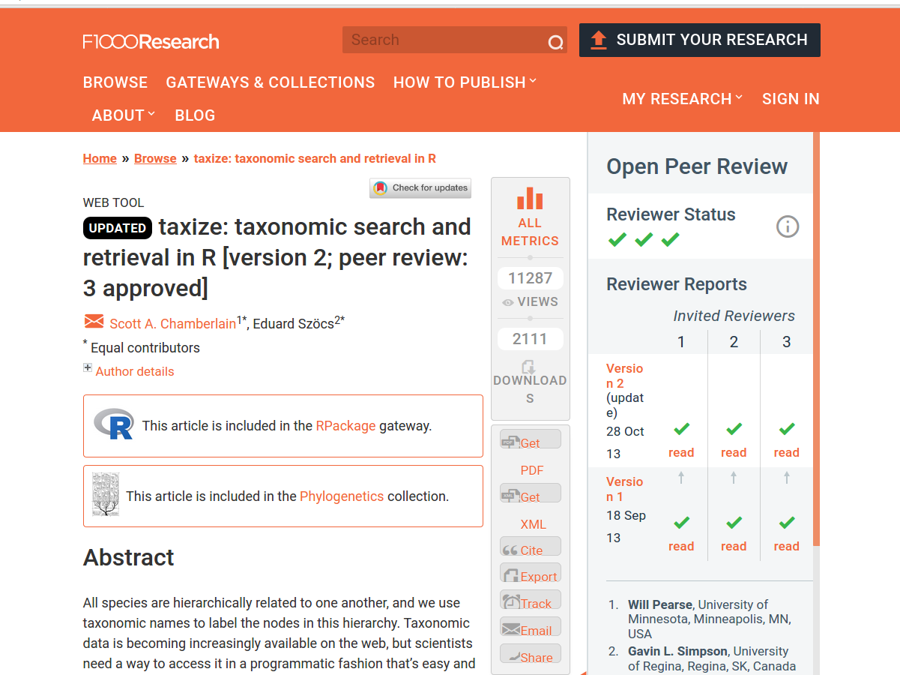
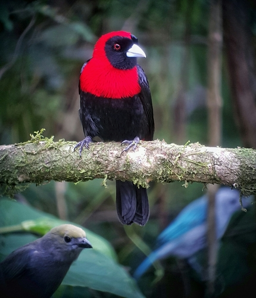

Código
# read the data
dat <- read.csv(file = "./additional_files/0098054-200613084148143.csv",
header = T, sep = "\t")
# what are the species in CR?
Ram.names <- levels(dat$species)
Ram.namesNULLOne aspect of scientific reproducibility that is specific to the biological sciences is how taxonomic information is obtained, used, and reported. In the discussion, we address the topics of using vouchers and the importance of adequately documenting the justification of taxonomic identifications. Here we will see a tool for obtaining and curating taxonomic information in a reproducible manner.
We will use the R package ‘taxize’. By the way, the article describing the package was published in the journal F1000Research, one of the journals we saw at the beginning of the semester is completely open.

There are online databases from which taxonomic information for various biological organisms can be obtained. However, there are advantages to performing these searches programmatically:
The idea of taxize is to make the extraction and use of taxonomic information easy and reproducible.

Image: Rohan Chakravarty/CC BY-NC-ND 3.0.
‘taxize’ connects with several taxonomic databases and more can be gradually added. This information can be used to carry out common tasks in the research process. For example:
If we have a list of specimens, we may want to know if we are using updated names and if the names we have are spelled correctly. We can do this using the Global Names Resolver (GNR) application from the Encyclopedia of Life, through taxize.
As an example, let’s look at occurrence data that I downloaded from GBIF. I downloaded records of birds from the genus Ramphocelus in Costa Rica, from the National Zoological Collection. Perhaps, I am working with or planning to work with these specimens.
The data is here (https://doi.org/10.15468/dl.d8frtc)
and this is an example of the bird:

<
font size=“2”> Ramphocelus sanguinolentus, La Fortuna, Costa Rica
# read the data
dat <- read.csv(file = "./additional_files/0098054-200613084148143.csv",
header = T, sep = "\t")
# what are the species in CR?
Ram.names <- levels(dat$species)
Ram.namesNULLLet’s see which databases I can use to search for the names of my species
library(taxize)
require(kableExtra)
data.sources <- gnr_datasources()
data.sources[, c(1, 5, 8, 9)]| created_at | id | refresh_period_days | title |
|---|---|---|---|
| 2012-07-06T11:36:36Z | 1 | 14 | Catalogue of Life Checklist |
| 2012-07-06T11:38:14Z | 2 | 14 | Wikispecies |
| 2012-02-09T10:31:13Z | 3 | 14 | Integrated Taxonomic Information SystemITIS |
| 2012-02-09T10:47:55Z | 4 | 14 | National Center for Biotechnology Information |
| 2012-02-09T11:16:43Z | 5 | 14 | Index Fungorum (Species Fungorum) |
| 2012-02-09T11:28:38Z | 6 | 14 | GRIN Taxonomy for Plants |
| 2012-02-09T11:32:18Z | 7 | 14 | Union 4 |
| 2012-02-09T12:08:54Z | 8 | 14 | The Interim Register of Marine and Nonmarine Genera |
| 2012-02-09T12:40:45Z | 9 | 14 | World Register of Marine Species |
| 2012-02-09T12:55:04Z | 10 | 14 | Freebase |
| 2012-02-09T13:01:40Z | 11 | 14 | GBIF Backbone Taxonomy |
| 2012-02-09T15:36:33Z | 12 | 14 | Encyclopedia of Life |
| 2012-02-09T18:21:08Z | 93 | 14 | Passiflora vernacular names |
| 2012-02-09T18:21:09Z | 94 | 14 | Inventory of Fish Species in the Wami River Basin |
| 2012-02-09T18:21:09Z | 95 | 14 | Pheasant Diversity and Conservation in the Mt. Gaoligonshan Region |
| 2012-02-09T18:21:09Z | 96 | 14 | Finding Species |
| 2012-02-09T18:21:10Z | 97 | 14 | Birds of Lindi Forests Plantation |
| 2012-02-09T18:21:11Z | 98 | 14 | Nemertea |
| 2012-02-09T18:21:12Z | 99 | 14 | Kihansi Gorge Amphibian Species Checklist |
| 2012-02-09T18:21:12Z | 100 | 14 | Mushroom Observer |
| 2012-02-09T18:21:14Z | 101 | 14 | TaxonConcept |
| 2012-02-09T18:21:15Z | 102 | 14 | Amphibia and Reptilia of Yunnan |
| 2012-02-09T18:21:17Z | 103 | 14 | Common names of Chilean Plants |
| 2012-07-06T11:49:07Z | 104 | 14 | Invasive Species of Belgium |
| 2012-02-09T18:21:20Z | 105 | 14 | ZooKeys |
| 2012-02-09T18:21:23Z | 106 | 14 | COA Wildlife Conservation List |
| 2012-02-09T18:21:25Z | 107 | 14 | AskNature |
| 2012-02-09T18:21:31Z | 108 | 14 | China: Yunnan, Southern Gaoligongshan, Rapid Biological Inventories Report No. 04 |
| 2012-02-09T18:21:34Z | 109 | 14 | Native Orchids from Gaoligongshan Mountains, China |
| 2012-02-09T18:21:37Z | 110 | 14 | Illinois Wildflowers |
| 2012-02-09T18:21:45Z | 112 | 14 | Coleorrhyncha Species File |
| 2012-02-09T18:21:46Z | 113 | 14 | /home/dimus/files/dwca/zoological names.zip |
| 2012-02-09T18:21:57Z | 114 | 14 | Peces de la zona hidrogeográfica de la Amazonia, Colombia (Spreadsheet) |
| 2012-02-09T18:22:04Z | 115 | 14 | Eastern Mediterranean Syllidae |
| 2012-02-09T18:22:06Z | 116 | 14 | Gaoligong Shan Medicinal Plants Checklist |
| 2012-02-09T18:22:14Z | 117 | 14 | birds_of_tanzania |
| 2012-02-09T18:22:23Z | 118 | 14 | AmphibiaWeb |
| 2012-02-09T18:22:38Z | 119 | 14 | tanzania_plant_sepecimens |
| 2012-02-09T18:22:45Z | 120 | 14 | Papahanaumokuakea Marine National Monument |
| 2012-02-09T18:23:21Z | 121 | 14 | Taiwanese IUCN species list |
| 2012-02-09T18:23:27Z | 122 | 14 | BioPedia |
| 2012-02-09T18:24:06Z | 123 | 14 | AnAge |
| 2012-02-09T18:24:25Z | 124 | 14 | Embioptera Species File |
| 2012-02-09T18:24:28Z | 125 | 14 | Global Invasive Species Database |
| 2012-02-09T18:24:38Z | 126 | 14 | Sendoya S., Fernández F. AAT de hormigas (Hymenoptera: Formicidae) del Neotrópico 1.0 2004 (Spreadsheet) |
| 2012-02-09T18:25:00Z | 127 | 14 | Flora of Gaoligong Mountains |
| 2012-02-09T18:25:16Z | 128 | 14 | ARKive |
| 2012-02-09T18:25:27Z | 129 | 14 | True Fruit Flies (Diptera, Tephritidae) of the Afrotropical Region |
| 2012-02-09T18:25:30Z | 130 | 14 | 3i - Typhlocybinae Database |
| 2012-02-09T18:26:09Z | 131 | 14 | CATE Sphingidae |
| 2012-02-09T18:26:28Z | 132 | 14 | ZooBank |
| 2012-02-09T18:26:44Z | 133 | 14 | Diatoms |
| 2012-02-09T18:27:14Z | 134 | 14 | AntWeb |
| 2012-02-09T18:27:40Z | 135 | 14 | Endemic species in Taiwan |
| 2012-02-09T18:28:15Z | 136 | 14 | Dermaptera Species File |
| 2012-02-09T18:28:21Z | 137 | 14 | Mantodea Species File |
| 2012-02-09T18:28:29Z | 138 | 14 | Birds of the World: Recommended English Names |
| 2012-02-09T18:29:01Z | 139 | 14 | New Zealand Animalia |
| 2012-02-09T18:30:39Z | 140 | 14 | Blattodea Species File |
| 2012-02-09T18:30:57Z | 141 | 14 | Plecoptera Species File |
| 2012-02-09T18:31:58Z | 143 | 14 | Coreoidea Species File |
| 2012-02-09T18:32:28Z | 144 | 14 | Freshwater Animal Diversity Assessment - Normalized export |
| 2012-02-09T18:33:38Z | 145 | 14 | Catalogue of Vascular Plant Species of Central and Northeastern Brazil |
| 2012-02-09T18:35:12Z | 146 | 14 | Wikipedia in EOL |
| 2012-02-09T18:36:49Z | 147 | 14 | Database of Vascular Plants of Canada (VASCAN) |
| 2012-02-09T18:38:13Z | 148 | 14 | Phasmida Species File |
| 2012-02-09T18:38:29Z | 149 | 14 | OBIS |
| 2012-02-09T18:40:09Z | 150 | 14 | USDA NRCS PLANTS Database |
| 2012-02-09T18:42:04Z | 151 | 14 | Catalog of Fishes |
| 2012-02-09T18:43:41Z | 152 | 14 | Aphid Species File |
| 2012-02-09T18:44:03Z | 153 | 14 | The National Checklist of Taiwan |
| 2012-02-09T18:46:06Z | 154 | 14 | Psocodea Species File |
| 2012-02-09T18:46:24Z | 155 | 14 | FishBase |
| 2012-02-09T18:48:19Z | 156 | 14 | 3i - Typhlocybinae Database |
| 2012-02-09T18:48:44Z | 157 | 14 | Belgian Species List |
| 2012-02-09T18:51:49Z | 158 | 14 | EUNIS |
| 2012-02-09T18:58:36Z | 159 | 14 | CU*STAR |
| 2012-02-09T19:10:42Z | 161 | 14 | Orthoptera Species File |
| 2012-02-09T19:11:37Z | 162 | 14 | Bishop Museum |
| 2012-02-09T19:18:20Z | 163 | 14 | IUCN Red List of Threatened Species |
| 2012-02-09T19:20:46Z | 164 | 14 | BioLib.cz |
| 2012-02-09T19:43:03Z | 165 | 14 | Tropicos - Missouri Botanical Garden |
| 2012-02-09T20:05:41Z | 166 | 14 | nlbif |
| 2012-02-09T20:36:27Z | 167 | 14 | The International Plant Names Index |
| 2012-05-07T13:45:07Z | 168 | 14 | Index to Organism Names |
| 2012-05-07T13:50:15Z | 169 | 14 | uBio NameBank |
| 2013-05-31T01:17:28Z | 170 | 14 | Arctos |
| 2013-12-10T03:02:58Z | 171 | 14 | Checklist of Beetles (Coleoptera) of Canada and Alaska. Second Edition. |
| 2014-12-08T11:17:24Z | 172 | 14 | The Paleobiology Database |
| 2014-12-08T19:50:56Z | 173 | 14 | The Reptile Database |
| 2014-12-09T21:27:18Z | 174 | 14 | The Mammal Species of The World |
| 2014-12-11T00:19:59Z | 175 | 14 | BirdLife International |
| 2015-03-03T13:48:51Z | 176 | 14 | Checklist da Flora de Portugal (Continental, Açores e Madeira) |
| 2016-07-20T11:13:25Z | 177 | 14 | FishBase Cache |
| 2016-10-18T20:00:31Z | 178 | 14 | Silva |
| 2016-10-19T10:13:10Z | 179 | 14 | Open Tree of Life Reference Taxonomy |
| 2016-10-30T00:46:40Z | 180 | 14 | iNaturalist Taxonomy |
| 2016-11-03T16:09:05Z | 181 | 14 | The Interim Register of Marine and Nonmarine Genera |
| 2017-03-22T15:26:50Z | 182 | 14 | Gymno |
| 2020-05-25T02:43:22Z | 183 | 14 | Index Animalium by Charles Davies Sherborn |
| 2020-05-25T10:32:16Z | 184 | 14 | ASM Mammal Diversity Database |
| 2020-05-27T01:41:11Z | 185 | 14 | IOC World Bird List |
| 2020-05-28T00:01:22Z | 186 | 14 | MCZbase |
| 2020-05-28T16:50:17Z | 187 | 14 | The eBird/Clements Checklist of Birds of the World |
| 2020-05-30T00:58:32Z | 188 | 14 | American Ornithological Society |
| 2020-05-31T00:36:35Z | 189 | 14 | Howard and Moore Complete Checklist of the Birds of the World |
| 2020-05-31T01:23:24Z | 193 | 14 | Myriatrix |
| 2021-03-19T16:48:41Z | 194 | 14 | PLAZI treatments |
| 2021-10-21T12:27:48Z | 195 | 14 | AlgaeBase |
| 2021-12-28T13:04:34Z | 196 | 14 | World Flora Online Plant List 2023-12 |
| 2021-12-29T13:29:11Z | 197 | 14 | World Checklist of Vascular Plants |
| 2021-12-30T14:32:51Z | 198 | 14 | The Leipzig Catalogue of Vascular Plants |
| 2022-01-14T22:16:40Z | 200 | 14 | The Terrestrial Parasite Tracker |
| 2022-02-14T15:59:43Z | 201 | 14 | ICTV Virus Taxonomy |
| 2022-02-18T21:58:40Z | 202 | 14 | Discover Life Bee Species Guide |
| 2023-03-01T22:57:31Z | 203 | 14 | MycoBank |
| 2023-03-01T23:38:23Z | 204 | 14 | Fungal Names |
| 2023-05-01T16:19:21Z | 205 | 14 | Nomenclator Zoologicus |
| 2023-08-22T20:12:02Z | 206 | 14 | Ruhoff 1980 |
| 2023-10-09T19:23:23Z | 207 | 14 | Wikidata |
| 2023-12-06T21:42:18Z | 208 | 14 | List of Prokaryotic names with Standing in Nomenclature |
| 2023-12-22T12:47:04Z | 209 | 14 | New Zealand Organizm Register |
Let’s check if they are spelled correctly
name.res <- gnr_resolve(sci = Ram.names, data_source_ids = c(3:4))
name.res[, -1]And what if they weren’t?
Ram.names2 <- Ram.names
Ram.names2[2] <- "Ramphocelus passerini"
name.res2 <- gnr_resolve(sci = Ram.names2, data_source_ids = c(3:4))
name.res2[, -1]| submitted_name | matched_name | data_source_title | score |
|---|---|---|---|
| Ramphocelus passerini | Ramphocelus passerinii Bonaparte, 1831 | Integrated Taxonomic Information SystemITIS | 0.75 |
| Ramphocelus passerini | Ramphocelus passerinii | National Center for Biotechnology Information | 0.75 |
Let’s search for synonyms for these species
synonyms(sci_id = Ram.names, db = "itis")To use some databases, it is necessary to obtain an ‘API key’. This cannot be done automatically with ‘taxize’ but instructions on how to obtain and save the API key for use from R can be obtained. Let’s look at a couple of examples:
use_tropicos()
use_iucn()
use_entrez()
# for more information
`?`(key_helpers())
`?`(`taxize-authentication`)install.packages("usethis")usethis::edit_r_environ()getkey()
We can obtain information about the higher taxonomic classification of our species. If your key is for ‘tropicos’ or ‘entrez’, you can use the respective databases (tropicos and ncbi). For example:
Ram.class <- classification(Ram.names, db = "ncbi")
Ram.class[[1]]and if we just want to know the family…
Ram.fam <- tax_name(sci = Ram.names, get = "family", db = "ncbi")
Ram.famPerhaps we want to know which or how many are the members of a certain taxonomic group. For example, how many species are in the genus Ramphocelus?
# separate the genus
genus <- strsplit(Ram.names[1], " ")[[1]][1]
# get the species
Ram.down <- downstream(sci_id = genus, downto = "species", db = "ncbi")
Ram.down[[1]]If you have the ‘API key’ for IUCN, you can obtain information about conservation status.
NOTE: The authors of ‘taxize’ warn to use with caution as there may be errors
Ram.sum <- iucn_summary(Ram.names)
iucn_status(Ram.sum)
get_iucn(Ram.names)Let’s see some examples of how using tools like ‘taxize’ contributes to more reproducible research.

Article by Gibb et al. 2020, Nature
From the methods section:
“We compiled animal host–pathogen associations from several source databases, to provide as comprehensive a dataset as possible of zoonotic host species and their pathogens: the Enhanced Infectious Diseases (EID2) database; the Global Mammal Parasite Database v.2.0 (GMPD2) which collates records of parasites of cetartiodactyls, carnivores and primates; a reservoir hosts database; a mammal–virus associations database; and a rodent zoonotic reservoirs database augmented with pathogen data from the Global Infectious Disease and Epidemiology Network (GIDEON) (Supplementary Table 8). We harmonized species names across all databases, excluding instances in which either hosts or pathogens could not be classified to species level. To prevent erroneous matches due to misspelling or taxonomic revision, all host species synonyms were accessed from Catalogue Of Life using ‘taxize’ v.0.8.939. Combined, the dataset contained 20,382 associations between 3,883 animal host species and 5,694 pathogen species.”
Let’s see the code from the article and make a small modification to apply the function to our data.
# taxize/GBIFr
require(taxize)
require(rgbif)
# function to find and resolve taxonomic synonyms based on Encyclopedia of Life
findSyns2 <- function(x){
# get specific species name
#taxname = hosts_vec[x]
# a small change to use the function with our data
taxname = x
# print progress
print(paste("Processing:", taxname, sep=" "))
# phyla
phyla = c("Chordata","Arthropoda","Gastropoda", "Mollusca")
# (1) resolve misspellings
taxname_resolved = gnr_resolve(taxname, with_canonical_ranks = TRUE)$matched_name2[1]
if(!is.null(taxname_resolved)){ if(length(strsplit(taxname_resolved, " ", fixed=TRUE)[[1]]) == 2 ){ taxa = taxname_resolved }}
if(!is.null(taxname_resolved)){ if(length(strsplit(taxname_resolved, " ", fixed=TRUE)[[1]]) > 2 ){ taxa = paste(strsplit(taxname_resolved, " ", fixed=TRUE)[[1]][1:2], collapse=" ")} }
# if taxa == NA, return list with nothing defined
if(is.na(taxa)){ if(class(syns)[1] == 'simpleError'){ return(data.frame(Original=taxname, Submitted=taxname_resolved, Accepted_name=NA, Selected_family=NA, Selected_order=NA, Selected_class=NA, Synonyms=NA))} }
# (2) remove sub-species categorizations and set 'genus' and 'species' variables
genus = NULL
if(length(strsplit(taxa, " ", fixed=TRUE)[[1]]) %in% c(2,3)){ genus = strsplit(taxa," ",fixed=TRUE)[[1]][1]; species = strsplit(taxa," ",fixed=TRUE)[[1]][2] }
if(length(strsplit(taxa, "_", fixed=TRUE)[[1]]) %in% c(2,3)){ genus = strsplit(taxa,"_",fixed=TRUE)[[1]][1]; species = strsplit(taxa,"_",fixed=TRUE)[[1]][2] }
if(length(strsplit(taxa, " ", fixed=TRUE)[[1]]) >3 | length(strsplit(taxa, "_" , fixed=TRUE)[[1]][1]) > 3){ return("name error") }
if(is.null(genus)){ genus = taxa; species = NA }
# (3) use genus to lookup family, order, class
syns = tryCatch( name_lookup(genus)$data, error = function(e) e)
if(class(syns)[1] == 'simpleError'){ return(data.frame(Original=taxname, Submitted=taxa, Accepted_name=NA, Selected_family=NA, Selected_order=NA, Selected_class=NA, Synonyms=NA))}
# for cases where the lookup does not find a phylum within the specified range
if(all(! syns$phylum %in% phyla)){
fam1 = syns$family[ !is.na(syns$family) & !is.na(syns$phylum) ]
order1 = syns$order[ !is.na(syns$family) & !is.na(syns$phylum) ]
class1 = syns$class[ !is.na(syns$family) & !is.na(syns$phylum) ]
datfam = data.frame(fam1=fam1, order=1:length(fam1), order1=order1, class1=class1)
# select highest frequency fam/class/order combo
fam2 = as.data.frame( table(datfam[ , c(1,3,4)]) )
family2 = as.vector(fam2[ fam2$Freq==max(fam2$Freq, na.rm=TRUE), "fam1"] )
order2 = as.vector(fam2[ fam2$Freq==max(fam2$Freq, na.rm=TRUE), "order1"] )
class2 = as.vector(fam2[ fam2$Freq==max(fam2$Freq, na.rm=TRUE), "class1"] )
if(length(fam2) > 1){
datfam2 = datfam[datfam$fam1 %in% family2, ]
family2 = as.vector(datfam2[datfam2$order == min(datfam2$order, na.rm=TRUE), "fam1"])
order2 = as.vector(datfam2[datfam2$order == min(datfam2$order, na.rm=TRUE), "order1"])
class2 = as.vector(datfam2[datfam2$order == min(datfam2$order, na.rm=TRUE), "class1"])
}
} else { # for everything else
fam1 = syns$family[ !is.na(syns$family) & !is.na(syns$phylum) & (syns$phylum %in% phyla) ]
order1 = syns$order[ !is.na(syns$family) & !is.na(syns$phylum) & (syns$phylum %in% phyla) ]
class1 = syns$class[ !is.na(syns$family) & !is.na(syns$phylum) & (syns$phylum %in% phyla) ]
datfam = data.frame(fam1=fam1, order=1:length(fam1), order1 = order1, class1=class1)
# select highest frequency fam/class/order combo
fam2 = as.data.frame( table(datfam[ , c(1,3,4)]) )
family2 = as.vector(fam2[ fam2$Freq==max(fam2$Freq, na.rm=TRUE), "fam1"] )
order2 = as.vector(fam2[ fam2$Freq==max(fam2$Freq, na.rm=TRUE), "order1"] )
class2 = as.vector(fam2[ fam2$Freq==max(fam2$Freq, na.rm=TRUE), "class1"] )
# select highest in list if more than one max
if(length(family2) > 1){
datfam2 = datfam[datfam$fam1 %in% family2, ]
family2 = as.vector(datfam2[datfam2$order == min(datfam2$order, na.rm=TRUE), "fam1"])
order2 = as.vector(datfam2[datfam2$order == min(datfam2$order, na.rm
=TRUE), "order1"])
class2 = as.vector(datfam2[datfam2$order == min(datfam2$order, na.rm=TRUE), "class1"])
}
}
# (4) search for species synonyms in ITIS
syns = tryCatch(suppressMessages(synonyms(taxa, db='itis')), error=function(e) e)
if(class(syns)[1] == 'simpleError'){ return(data.frame(Original=taxname, Submitted=taxa, Accepted_name="failed", Selected_family=family2, Selected_order=order2, Selected_class=class2, Synonyms="failed"))}
syns = as.data.frame(syns[[1]])
# get info
original = taxa
accepted_name = taxa # save accepted name as original searched name
if("acc_name" %in% names(syns)){ accepted_name = syns$acc_name } # unless search shows that this is not the accepted name
if("syn_name" %in% names(syns)){ synonyms = unique(syns$syn_name)
} else{ synonyms = NA }
# combine into list and add synonyms
result = data.frame(Original=taxname,
Submitted=taxa,
Accepted_name=accepted_name,
Selected_family=family2,
Selected_order=order2,
Selected_class=class2)
result = do.call("rbind", replicate(length(synonyms), result[1, ], simplify = FALSE))
result$Synonyms = synonyms
return(result)
}
# nest function within a tryCatch call in case of any errors
findSyns3 = function(x){
result = tryCatch(findSyns2(x), error=function(e) NULL)
return(result)
}Earlier, we saw that there’s a name synonymous with Ramphocelus sanguinolentus. What would the function by Gibb et al. do with that?
Ram.syn1 <- findSyns3("Phlogothraupis sanguinolenta")[1] "Processing: Phlogothraupis sanguinolenta"
══ 1 queries ═══════════════Ram.syn1| Original | Submitted | Accepted_name | Selected_family | Selected_order | Selected_class | Synonyms |
|---|---|---|---|---|---|---|
| Phlogothraupis sanguinolenta | Phlogothraupis sanguinolenta | failed | Thraupidae | Passeriformes | Aves | failed |
And with one that’s misspelled?
Ram.syn2 <- findSyns3(Ram.names2[2])[1] "Processing: Ramphocelus passerini"
══ 1 queries ═══════════════Ram.syn2| Original | Submitted | Accepted_name | Selected_family | Selected_order | Selected_class | Synonyms |
|---|---|---|---|---|---|---|
| Ramphocelus passerini | Ramphocelus passerinii | failed | Thraupidae | Passeriformes | Aves | failed |

Article by Niedballa et al. 2016,Methods Ecol. Evol.
From the methods section:
“Users are free to use any species names (or abbreviations or codes) they wish. If scientific or common species names are used, the function checkSpeciesNames can check them against the ITIS taxonomic database (www.itis.gov) and returns their matching counterparts (utilizing the R package taxize (Chamberlain & Szöcs 2013) internally), making sure species names and spelling are standardized and taxonomically sound, and thus making it easier to combine data sets from different studies.”
Let’s see some examples from the camtrapR vignettes. We’re not going to download the package because the CRAN version of ‘camtrapR’ is not compatible with the CRAN version of ‘taxize’.

Let’s rewrite the current function updating the arguments of ‘taxize’.
checkSpeciesNames <- function(speciesNames, searchtype, accepted = TRUE,
ask = TRUE) {
if (!requireNamespace("taxize", quietly = TRUE)) {
stop("Please install the package taxize to run this function")
}
if (!requireNamespace("ritis", quietly = TRUE)) {
stop("Please install the package ritis to run this function")
}
searchtype <- match.arg(searchtype, choices = c("scientific",
"common"))
stopifnot(is.logical(accepted))
stopifnot(is.character(speciesNames) | is.factor(speciesNames))
speciesNames <- unique(as.character(speciesNames))
file.sep <- .Platform$file.sep
tsns <- try(taxize::get_tsn(sci_com = speciesNames, searchtype = searchtype,
accepted = accepted, ask = ask, messages = FALSE))
if (inherits(tsns, "try-error")) {
message(paste("error in get_tsn. Exiting without results:\n",
tsns, sep = ""))
return(invisible(NULL))
}
tsns <- taxize::as.tsn(unique(tsns), check = FALSE)
if (any(is.na(tsns))) {
not.matched <- which(is.na(tsns))
warning(paste("found no matches for", length(not.matched),
"name(s):\n", paste(speciesNames[not.matched], collapse = ", ")),
immediate. = TRUE, call. = FALSE)
tsns_worked <- taxize::as.tsn(tsns[-not.matched], check = FALSE)
} else {
tsns_worked <- tsns
}
if (length(tsns_worked) >= 1) {
scientific <- common <- author <- rankname <- taxon_status <- data.frame(matrix(NA,
nrow = length(tsns_worked), ncol = 2), stringsAsFactors = FALSE)
colnames(scientific) <- c("tsn", "combinedname")
colnames(common) <- c("tsn", "commonName")
colnames(author) <- c("tsn", "authorship")
colnames(rankname) <- c("tsn", "rankname")
colnames(taxon_status) <- c("tsn", "taxonUsageRating")
for (i in 1:length(tsns_worked)) {
scientific_tmp <- ritis::scientific_name(tsns_worked[i])
common_tmp <- ritis::common_names(tsns_worked[i])
author_tmp <- ritis::taxon_authorship(tsns_worked[i])
rankname_tmp <- ritis::rank_name(tsns_worked[i])
if ("tsn" %in% colnames(scientific_tmp)) {
scientific[i, ] <- scientific_tmp[c("tsn", "combinedname")]
}
if ("tsn" %in% colnames(common_tmp)) {
if (length(unique(common_tmp$tsn)) > 1) {
common2 <- tapply(common_tmp$commonName, INDEX = common_tmp$tsn,
FUN = paste, collapse = file.sep)
common_tmp <- data.frame(commonName = common2, tsn = rownames(common2),
stringsAsFactors = FALSE)
}
common[i, ] <- common_tmp[, c("tsn", "commonName")]
}
if ("tsn" %in% colnames(author_tmp)) {
author[i, ] <- author_tmp[c("tsn", "authorship")]
}
if ("tsn" %in% colnames(rankname_tmp)) {
rankname[i, ] <- rankname_tmp[c("tsn", "rankname")]
}
if (accepted == FALSE) {
taxon_status_tmp <- ritis::core_metadata(tsns_worked[i])
if ("tsn" %in% colnames(taxon_status_tmp)) {
taxon_status[i, ] <- taxon_status_tmp[c("tsn", "taxonUsageRating")]
}
}
}
dat.out <- data.frame(user_name = speciesNames, tsn = as.numeric(tsns))
dat.out <- merge(x = dat.out, y = scientific, by = "tsn",
all.x = TRUE, sort = FALSE)
dat.out <- merge(x = dat.out, y = common, by = "tsn", all.x = TRUE,
sort = FALSE)
dat.out <- merge(x = dat.out, y = author, by = "tsn", all.x = TRUE,
sort = FALSE)
dat.out <- merge(x = dat.out, y = rankname, by = "tsn", all.x = TRUE,
sort = FALSE)
dat.out$itis_url <- NA
dat.out$itis_url[match(tsns_worked, dat.out$tsn)] <- attributes(tsns_worked)$uri
colnames(dat.out)[colnames(dat.out) == "combinedname"] <- "scientificName"
if (accepted == FALSE) {
dat.out <- merge(x = dat.out, y = taxon_status, by = "tsn",
all.x = TRUE, sort = FALSE)
} else {
dat.out$taxon_status[!is.na(dat.out$tsn)] <- "valid"
}
return(dat.out)
} else {
stop("found no TSNs for speciesNames", call. = FALSE)
}
}Now, what can we do?
checkNames1 <- checkSpeciesNames(speciesNames = c("Bearded Pig", "Malayan Civet"),
searchtype = "common")Error in curl::curl_fetch_memory(x$url$url, handle = x$url$handle) :
SSL peer certificate or SSH remote key was not OK: [www.itis.gov] SSL certificate problem: unable to get local issuer certificatecheckNames1 %>%
kbl() %>%
kable_minimal()checkNames2 <- checkSpeciesNames(speciesNames = "Viverra tangalunga tangalunga",
searchtype = "scientific")Error in curl::curl_fetch_memory(x$url$url, handle = x$url$handle) :
SSL peer certificate or SSH remote key was not OK: [www.itis.gov] SSL certificate problem: unable to get local issuer certificatecheckNames2 %>%
kbl() %>%
kable_minimal()checkNames3 <- checkSpeciesNames(speciesNames = "Felis bengalensis",
searchtype = "scientific", accepted = FALSE)Error in curl::curl_fetch_memory(x$url$url, handle = x$url$handle) :
SSL peer certificate or SSH remote key was not OK: [www.itis.gov] SSL certificate problem: unable to get local issuer certificatecheckNames3NULLcheckNames4 <- checkSpeciesNames(speciesNames = "Chevrotain", searchtype = "common")
# choose from the menu
checkNames4Chamberlain, S. A., & Szöcs, E. (2013). taxize: taxonomic search and retrieval in R. F1000Research, 2.
R version 4.3.2 (2023-10-31)
Platform: x86_64-pc-linux-gnu (64-bit)
Running under: Ubuntu 22.04.2 LTS
Matrix products: default
BLAS: /usr/lib/x86_64-linux-gnu/blas/libblas.so.3.10.0
LAPACK: /usr/lib/x86_64-linux-gnu/lapack/liblapack.so.3.10.0
locale:
[1] LC_CTYPE=en_US.UTF-8 LC_NUMERIC=C
[3] LC_TIME=en_US.UTF-8 LC_COLLATE=en_US.UTF-8
[5] LC_MONETARY=en_US.UTF-8 LC_MESSAGES=en_US.UTF-8
[7] LC_PAPER=en_US.UTF-8 LC_NAME=C
[9] LC_ADDRESS=C LC_TELEPHONE=C
[11] LC_MEASUREMENT=en_US.UTF-8 LC_IDENTIFICATION=C
time zone: America/Costa_Rica
tzcode source: system (glibc)
attached base packages:
[1] stats graphics grDevices utils datasets methods base
other attached packages:
[1] rgbif_3.7.9 kableExtra_1.4.0 taxize_0.9.100 knitr_1.48
[5] emo_0.0.0.9000
loaded via a namespace (and not attached):
[1] gtable_0.3.5 xfun_0.47 ggplot2_3.5.1 htmlwidgets_1.6.4
[5] lattice_0.20-45 vctrs_0.6.5 tools_4.3.2 generics_0.1.3
[9] curl_5.2.2 parallel_4.3.2 tibble_3.2.1 fansi_1.0.6
[13] highr_0.11 pkgconfig_2.0.3 data.table_1.14.10 assertthat_0.2.1
[17] uuid_1.2-1 lifecycle_1.0.4 conditionz_0.1.0 compiler_4.3.2
[21] stringr_1.5.1 munsell_0.5.1 ritis_1.0.0 codetools_0.2-18
[25] htmltools_0.5.8.1 lazyeval_0.2.2 yaml_2.3.10 whisker_0.4.1
[29] pillar_1.9.0 crayon_1.5.3 solrium_1.2.0 iterators_1.0.14
[33] foreach_1.5.2 nlme_3.1-155 tidyselect_1.2.1 digest_0.6.37
[37] stringi_1.8.4 dplyr_1.1.4 purrr_1.0.2 fastmap_1.2.0
[41] grid_4.3.2 colorspace_2.1-1 cli_3.6.3 magrittr_2.0.3
[45] bold_1.3.0 triebeard_0.4.1 crul_1.4.0 utf8_1.2.4
[49] ape_5.8 scales_1.3.0 oai_0.4.0 lubridate_1.9.3
[53] timechange_0.2.0 httr_1.4.7 rmarkdown_2.28 zoo_1.8-12
[57] evaluate_0.24.0 viridisLite_0.4.2 rlang_1.1.4 urltools_1.7.3
[61] Rcpp_1.0.13 glue_1.7.0 httpcode_0.3.0 formatR_1.14
[65] xml2_1.3.6 svglite_2.1.3 rstudioapi_0.16.0 jsonlite_1.8.8
[69] plyr_1.8.9 R6_2.5.1 systemfonts_1.1.0